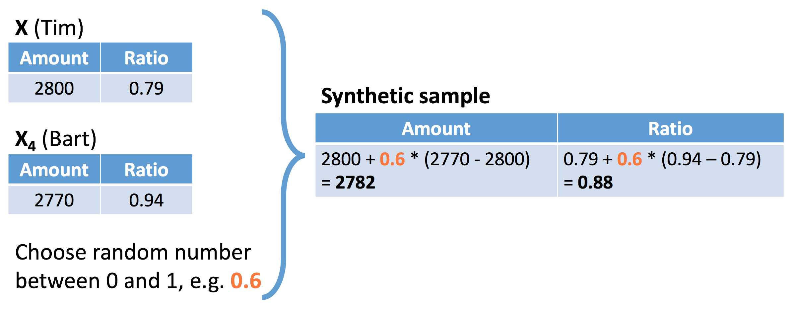

SMOTE 学习笔记
2019-04-18
knitr::opts_chunk$set(warning = FALSE, message = FALSE)1 理论部分和代码
欺诈用户的样本存在严重的不平衡的问题，因此采样方法较常用。 Chawla et al. (2002) 提出SMOTE方法，用于解决不平衡样本的问题。
1.1 intro

如图，红色点表示欺诈用户，图中的位置反映在两特征变量上的表现。

任意选择一点。

选择任意比例，构建两点间的一个样本。

因此，SMOTE产生的新样本出现了。
dup_sizeparameter answers the question how many times SMOTE should loop through the existing, real fraud cases.
- 同时参数
dup_size给定SMOTE算法需要给每个y=1产生多少个新的样本。这里的y=1是少量样本。 dup_size不是 \(\lambda\)，容易混淆。
1.2 modeling
suppressMessages(library(tidyverse))
library(smotefamily)SMOTE can only be applied based on numeric variables since it uses the euclidean distance to determine nearest neighbors.
creditcard <- read_rds(here::here("data/creditcard-small.rds"))
# Set the number of fraud and legitimate cases, and the desired percentage of legitimate cases
n1 <- sum(creditcard$Class==1)
n0 <- sum(creditcard$Class==0)
r0 <- 0.6
# r0: the desired percentage
# Calculate the value for the dup_size parameter of SMOTE
ntimes <- ((1 - r0) / r0) * (n0 / n1) - 1
# Create synthetic fraud cases with SMOTE
library(data.table)
smote_output <- SMOTE(X = creditcard %>% select(-Time,Class), target = creditcard$Class, K = 5, dup_size = ntimes)
# remove non-numeric vars
# Make a scatter plot of the original and over-sampled dataset
credit_smote <- smote_output$data
colnames(credit_smote)[30] <- "Class"
prop.table(table(credit_smote$Class))##
## 0 1
## 0.6004735 0.3995265ggplot(creditcard, aes(x = V1, y = V2, color = factor(Class))) +
geom_point() +
scale_color_manual(values = c('dodgerblue2', 'red'))ggplot(credit_smote, aes(x = V1, y = V2, color = factor(Class))) +
geom_point() +
scale_color_manual(values = c('dodgerblue2', 'red'))- 你会发现，通过SMOTE算法，以后很多点连成了直线，原因这是算法的机制，具体原因见 1.1
报错
Errorin knearest(P_set, P_set, K) : 找不到对象'knD'
- 函数为
smotefamily::SMOTE - CSDN博客介绍其他的R中SMOTE的包
- 解决办法是
install.packages("FNN")参考 Stack Overflow
-
ntimes <- ((1 - r0) / r0) * (n0 / n1) - 1理解公式
1.3 split train and test
这里用于验证SMOTE方法是否有提高模型效果。
dim(creditcard)## [1] 28481 31set.seed(123)
creditcard <- creditcard %>% mutate(Class = as.factor(Class))
train_index <- sample(nrow(creditcard),round(0.5*nrow(creditcard)))
train <- creditcard[train_index,]
test <- creditcard[-train_index,]library(rpart)
model01 <- rpart(factor(Class) ~ ., data = train)
library(caret)
scores01 <- predict(model01,newdata=test,type = "prob")[,2]
predicted_class01 <- ifelse(scores01>0.5,1,0) %>% factor()
confusionMatrix(
data = predicted_class01
,reference = test$Class
)## Confusion Matrix and Statistics
##
## Reference
## Prediction 0 1
## 0 14203 6
## 1 1 31
##
## Accuracy : 0.9995
## 95% CI : (0.999, 0.9998)
## No Information Rate : 0.9974
## P-Value [Acc > NIR] : 1.906e-09
##
## Kappa : 0.8983
##
## Mcnemar's Test P-Value : 0.1306
##
## Sensitivity : 0.9999
## Specificity : 0.8378
## Pos Pred Value : 0.9996
## Neg Pred Value : 0.9688
## Prevalence : 0.9974
## Detection Rate : 0.9973
## Detection Prevalence : 0.9978
## Balanced Accuracy : 0.9189
##
## 'Positive' Class : 0
## library(pROC)
auc(roc(response = test$Class, predictor = scores01))## Area under the curve: 0.919library(smotefamily)
set.seed(123)
smote_result <- SMOTE(X = train %>% select(-Class),target = train$Class,K = 10, dup_size = 50)
train_oversampled <-
smote_result$data %>%
mutate(Class = class)prop.table(table(train$Class))##
## 0 1
## 0.997331461 0.002668539prop.table(table(train_oversampled$Class))##
## 0 1
## 0.8799257 0.1200743library(rpart)
model02<- rpart(Class ~ ., data = train_oversampled)library(rpart)
model02 <- rpart(factor(Class) ~ ., data = train)
library(caret)
scores02 <- predict(model02,newdata=test,type = "prob")[,2]
predicted_class02 <- ifelse(scores02>0.5,1,0) %>% factor()
confusionMatrix(
data = predicted_class02
,reference = test$Class
)## Confusion Matrix and Statistics
##
## Reference
## Prediction 0 1
## 0 14203 6
## 1 1 31
##
## Accuracy : 0.9995
## 95% CI : (0.999, 0.9998)
## No Information Rate : 0.9974
## P-Value [Acc > NIR] : 1.906e-09
##
## Kappa : 0.8983
##
## Mcnemar's Test P-Value : 0.1306
##
## Sensitivity : 0.9999
## Specificity : 0.8378
## Pos Pred Value : 0.9996
## Neg Pred Value : 0.9688
## Prevalence : 0.9974
## Detection Rate : 0.9973
## Detection Prevalence : 0.9978
## Balanced Accuracy : 0.9189
##
## 'Positive' Class : 0
## library(pROC)
auc(roc(response = test$Class, predictor = scores02))## Area under the curve: 0.919SMOTE 并不是每次都有效果，因此要通过这种方法进行验证。
1.4 cost model
在不平衡样本中，ACC是有误导的，因此引入成本矩阵。 这是另外一种考虑。一般来说模型需要对比 KS 或者 ACC。但是业务上，损失一个预测错的 y = 1，损失会更大，因此引入成本矩阵是可以从成本角度看模型的好坏。

- SMOTE : Synthetic Minority Oversampling TEchnique (Chawla et al., 2002)
因此成本函数可以定义为
\[Cost(\text{model})=\sum_{i=1}^{N}y_i(1-\hat y_i)\text{Amount}_i + \hat y_i C_a\]
- \(y_i\)为真实值，且 \(\hat y_i\)为预测值
- 如图，一共有两种成本
- Cost of analyzing the case
- 被欺诈损失的本金
cost_model <- function(predicted.classes, true.classes, amounts, fixedcost) {
library(hmeasure)
predicted.classes <- relabel(predicted.classes)
true.classes <- relabel(true.classes)
cost <- sum(true.classes * (1 - predicted.classes) * amounts + predicted.classes * fixedcost)
return(cost)
}cost_model(
predicted.classes = predicted_class01
,true.classes = test$Class
,amounts = test$Amount
,fixedcost = 10
)## [1] 1356.12cost_model(
predicted.classes = predicted_class02
,true.classes = test$Class
,amounts = test$Amount
,fixedcost = 10
)## [1] 1356.12- 说明SMOTE 算法无效。
- 找一个更好的数据集，验证 SMOTE 的方法更好。
2 相关评论
理论上，不平衡样本不是大问题。
样本的平衡程度是影响逻辑回归的截距，但是截距一般是不重要的，因为可以剔除，因为在进行切bin时，我们选择cut_number的方式，均分样本，截距大小不影响切分(狗熊会 2018)。
但是实际工作中还是有影响，这里使用SMOTE算法。 SMOTE算法是由 Chawla et al. (2002) 剔除，这是一种过采样，over sampling。 新增数据的方法是随机选择\(m\)个少类样本，找到靠近这\(m\)个样本的\(n\)个样本，随机选择这\(n\)个样本的其二，连线得到一个点，这个点就是新增样本(刘建平 2018; 机器学习之旅 2018)。
install.packages(“DMwR”,dependencies=T)
library(DMwR)
#加载smote包
newdata=SMOTE(formula,data,perc.over=,perc.under=)
#formula:申明自变量因变量
#perc.over：过采样次数
#perc.under：欠采样次数3 和欠采样和过采样的关系
SMOTE 和 过采样、欠采样 都是随机抽样
SMOTE 是随机抽样两个点，再随机一个 \(\lambda\) 合成，基础还是随机抽样，因此很好理解。
参考文献
Chawla, Nitesh V., Kevin W. Bowyer, Lawrence O. Hall, and W. Philip Kegelmeyer. 2002. “SMOTE: Synthetic Minority over-Sampling Technique.” Journal of Artificial Intelligence Research 16 (1): 321–57.
刘建平. 2018. “特征工程之特征预处理.” 2018. https://www.cnblogs.com/pinard/p/9093890.html.
机器学习之旅. 2018. “不平衡数据处理实战(smote).” 2018. https://mp.weixin.qq.com/s/xS2w3hEQEEZpY6mZVz3KWg.
狗熊会. 2018. “再论正负样本分布不均衡问题.” 2018. https://mp.weixin.qq.com/s/y-IEltRsmNdbZGyO2hBrwA.